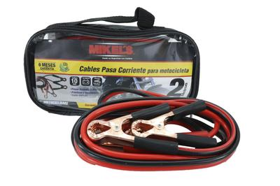

| Imagen |
Descripción / Modelo |
Precio |
|  |
Cables para pasar corriente unicamente para motocicletas marca MIKELS largo 21 cm,
longitud de 5 mts, pinzas de cobre con aislante piezas disponibles 38 unidades, 2 meses de
garantia con tienda
|
$100.00.- |
 |
Duralast Camilla para taller de acero 36 pulg, 4 ruedas giratorias duraderas proporcionan capacidad de maniobrabilidad,
Marco con recubrimiento de polvo negro, construccion de banco alcochonado, tamaño de la ruedita 2.5,
numeros de ruedas 4, cabecera ajustable no, separacion del suelo 4.3 pulgadas piezas disponibles 25,
garantia en tienda de 3 meses
|
$ 900.00.- |
 |
Duralast Gato para garaje para 3 toneladas, Rango de elevación: 5.13 hasta 19.5 pulg,
su soporte ancho provee estabilidad bajo carga, Mango de dos piezas con agarre de hule para facilitar
su manipulación y almacenamiento, material de acero, pintura color azul, con 4 ruedas para mayor
facilidad de transportar, peso de 21 kg, piezas disponibles 3 garantia de 1 año.
|
$ 3,500.00.- |
 |
Duralast tanque de aire de 27 litros, de color azul, Tanque de aire portátil para inflar neumáticos y equipo recreativo. Cuenta con un indicador de presión fácil de leer,
manguera de alta presión de 92 cm. y una válvula de alivio de presión para seguridad de 60 x 28 x 30, 27 litros de aire comprimido,
presion de 125 psi, Úselo para inflar neumáticos automotrices, neumáticos de motocicletas y equipo deportivo
piezas disponibles 7 garantia de 2 años en tienda.
|
$ 1,200.- |
 |
Vaper Kit de pistolas pulverizadoras con indicador, 3 piezas, Válvula de aire para un ajuste preciso del flujo de aire
Depósito de pintura de aluminio ligero, El control del patrón de rocío permite el ajuste de forma redonda y de abanico completo,
peso de 2 kilos, color plateado, incluyen estuche, piezas disponibles 10 kits, garantia de 6 meses en tienda
|
$ 2,500.00.- |
 |
SureBilt Probador de continuidad, Ideal para buscar roturas en electrodomésticos, cables de extensión y más,
electronico, piezas disponibles 25, incluye estuche y 2 pilas, garantia sin garantia
|
$ 170.00.- |